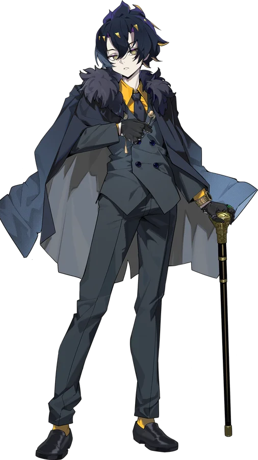
阿尔 · 暗区少主
“地窖”的创始人之一，与“凰天会”和恩菲尔德家族有着密切往来，人称“A.L”。兵器“天王”的持有者。“天王落”事件的主因。因为阿尔不知为何原因准备将“天王”摧毁才引发了后面的公司战争。摧毁天王使得一系列的神秘事件重新开始袭扰联合城。也正因此事，神器才又重回大众视野。
选择1-3张卡牌给予一个敌方角色，夺取目标给予牌数量*3的星币。
PVE选择1-3张卡牌给予一个友方角色，获取给予牌数量的星币。
获得星币时，攻击力+2，防御力+1，持续1轮。
PVE使友方角色获得卡牌时，双方获得1层星光。自身每拥有6层星光，攻击力+1，防御力+1。
基础资料
PVE 特性
- 达到1星时攻击力+1
- 初始星币+6
- 达到3星时攻击力+1、防御力+1、移动速度+1
默认
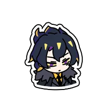
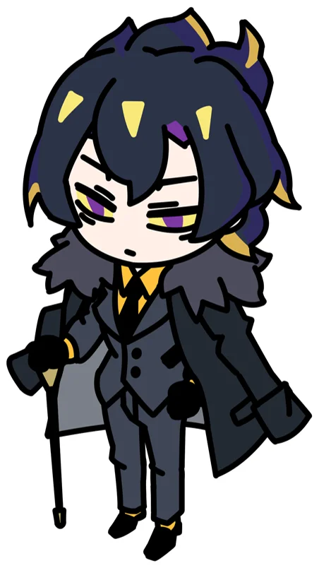
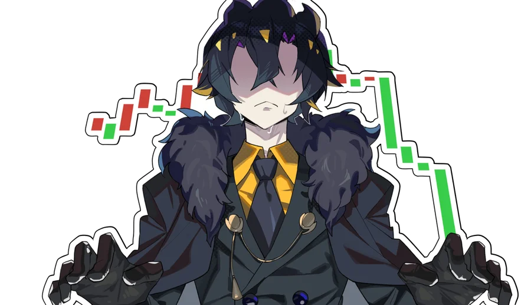
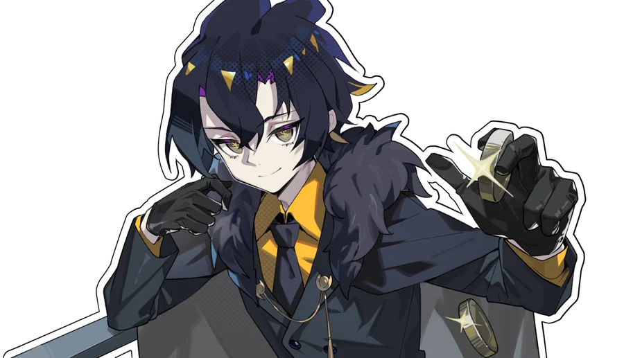
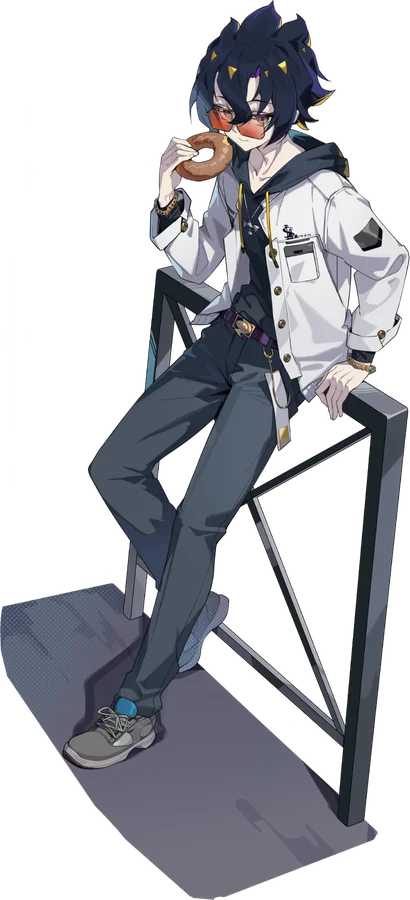
羁绊皮肤
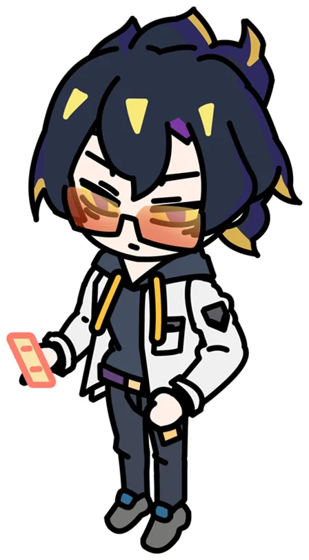
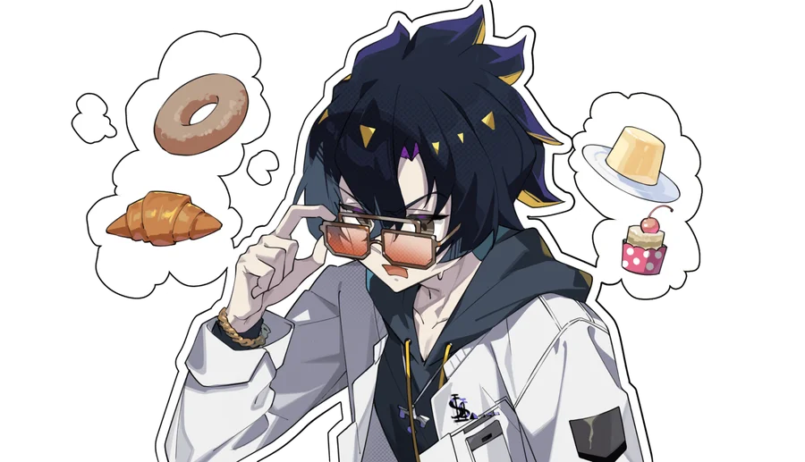
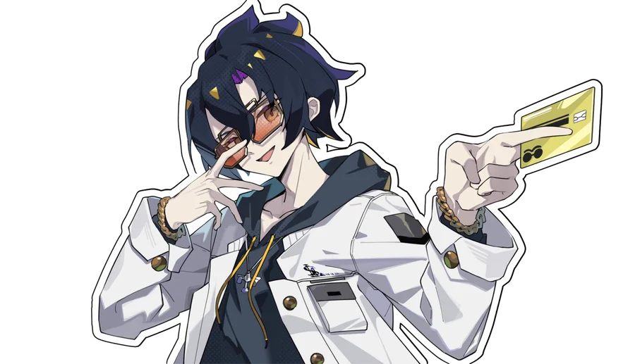
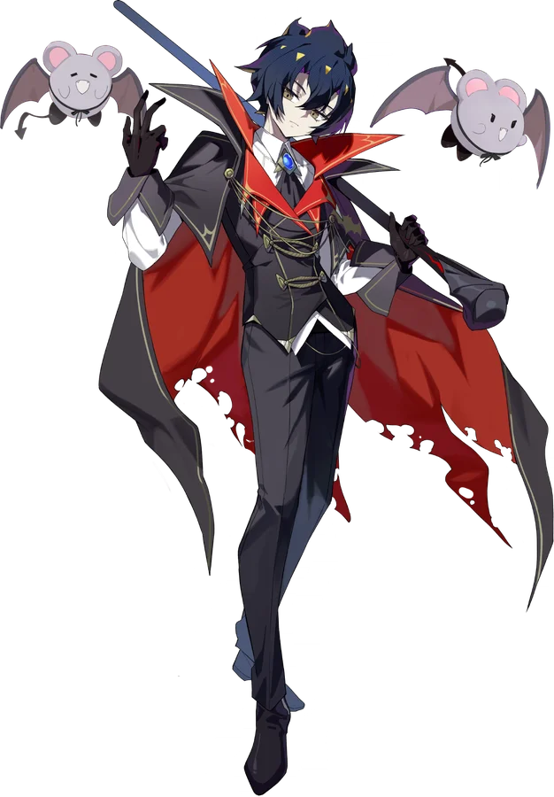
番茄酱魔法
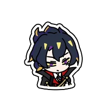
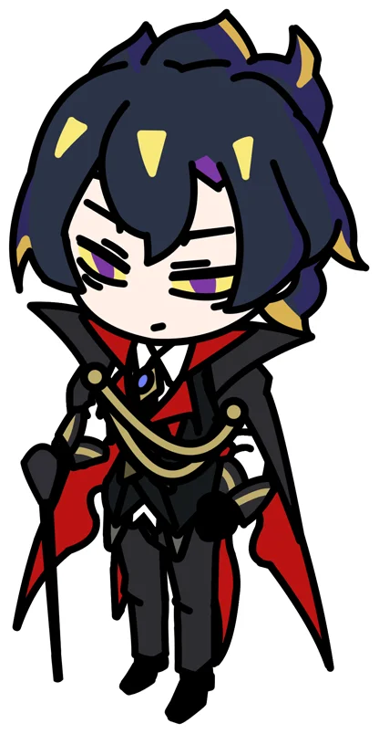
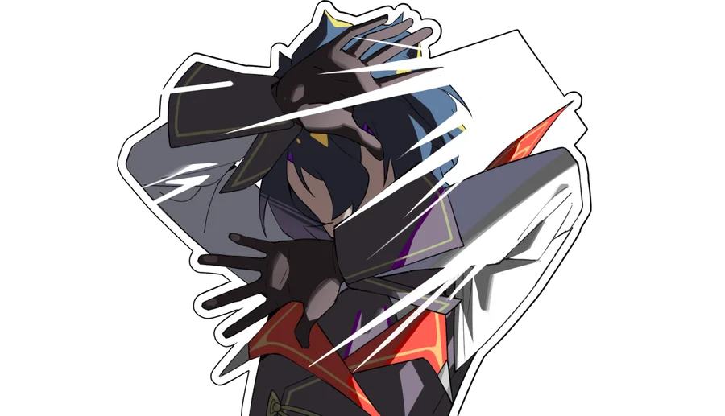
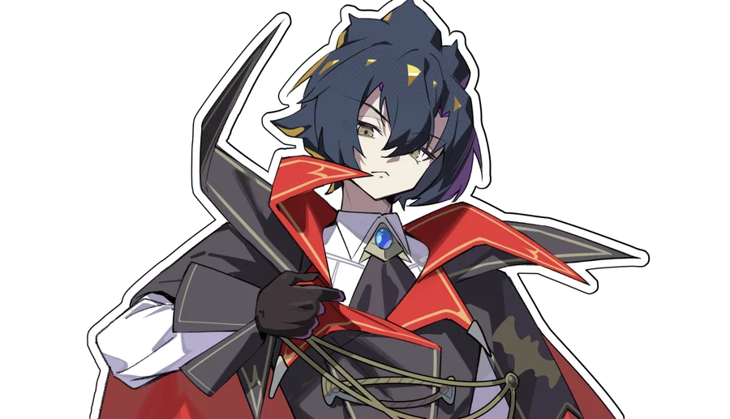
御魂庆典是联合城最重要的节日之一。庆典期间，大家都会涌上街头进行各种角色扮演，阿尔也不例外。 这个时候，作为老板的阿尔会给自己放个假，当然也包括手下的弟兄们。因为后街有盛大的“魔怪舞会”活动，所以相当热闹。 阿尔扮演的是一个古堡伯爵的角色。从外形和标志性装饰来看，这毫无疑问是那个角色了。经典的斗篷，口中露出的尖牙，以及装饰在身边的戴着翅膀的蝙蝠，都完美还原了角色形象。 当然，阿尔还加入了很多特效：红色的液体随着每一次抖动手杖喷溅而出。但仔细一闻，用手沾一点放在嘴里 ——该死，这不是番茄酱吗？ 我只能说，不愧是有钱人。用带有颜料的水也能达到同样的效果，他偏偏要用番茄酱代替，简直奢侈至极！ 不过效果确实非常出色，粘稠度和甜度都恰到好处，还不赖！
共 8 个表情，点击可放大。
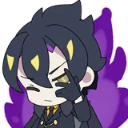
官方 wiki 没有这角色的 /获取 页，头像、名片、卡牌、骰子的完整清单暂缺；下方「档案」里保留了画廊中的零散素材。
人物传记
在“天王落”事件后消失，不知所踪。
皮肤故事
番茄酱魔法
御魂庆典是联合城最重要的节日之一。庆典期间，大家都会涌上街头进行各种角色扮演，阿尔也不例外。 这个时候，作为老板的阿尔会给自己放个假，当然也包括手下的弟兄们。因为后街有盛大的“魔怪舞会”活动，所以相当热闹。 阿尔扮演的是一个古堡伯爵的角色。从外形和标志性装饰来看，这毫无疑问是那个角色了。经典的斗篷，口中露出的尖牙，以及装饰在身边的戴着翅膀的蝙蝠，都完美还原了角色形象。 当然，阿尔还加入了很多特效：红色的液体随着每一次抖动手杖喷溅而出。但仔细一闻，用手沾一点放在嘴里 ——该死，这不是番茄酱吗？ 我只能说，不愧是有钱人。用带有颜料的水也能达到同样的效果，他偏偏要用番茄酱代替，简直奢侈至极！ 不过效果确实非常出色，粘稠度和甜度都恰到好处，还不赖！
画廊其他素材
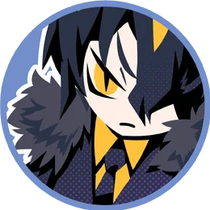
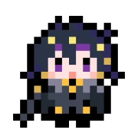
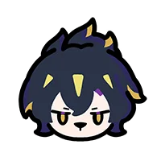
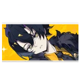
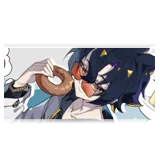
本地未收录该角色的语音台词。